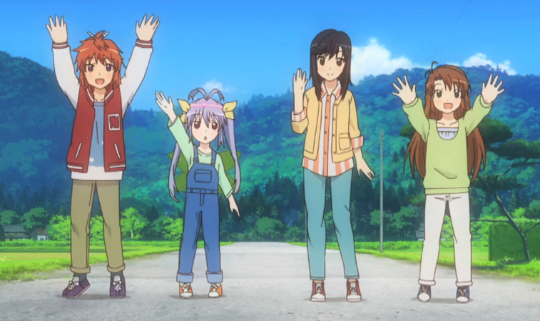

First Steps
We generally don't suggest you get too caught up in the specifics of what you're doing. Language learning is personal and, as long as you take our philosophy to heart, we believe you will be a successful language learner no matter what you do.
Suggestions
That said, we would like to take a moment here to outline some things you might try in the early stages of your language learning journey.
Kid's Shows
It's easy to get overwhelmed early on. One thing we suggest to take the pressure off is watching shows meant for children. The vocabulary is usually more limited and the plots are easier to follow. Animation is also very expressive and makes for great comprehensible input.
Starter Decks

Later on you will learn about sentence mining. For now, you need to get a base vocabulary solidifed. You can sign up to our mailing list to get free resources like these starter decks. They contain flashcards for the most common words in your target language, so you'll be using your time efficiently and developing comprehension faster than you ever thought possible.
Or you can google around for starter decks if you don't like ours. Just keep in mind you want to be targetting the most common ~1,000 words or so. These will give you the most bang for your buck in terms of time.